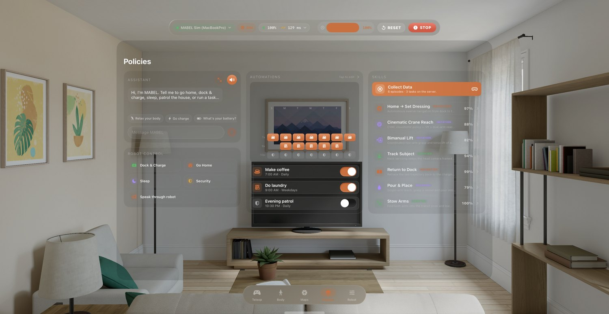
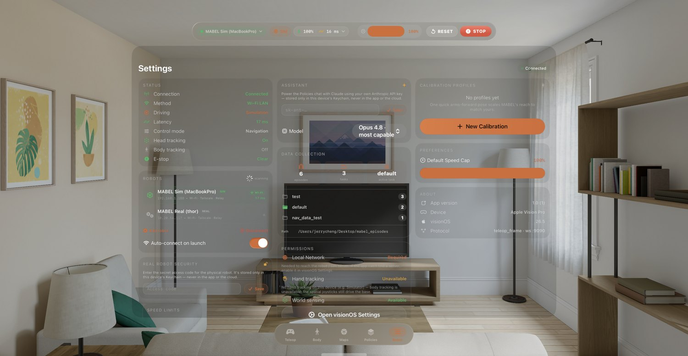
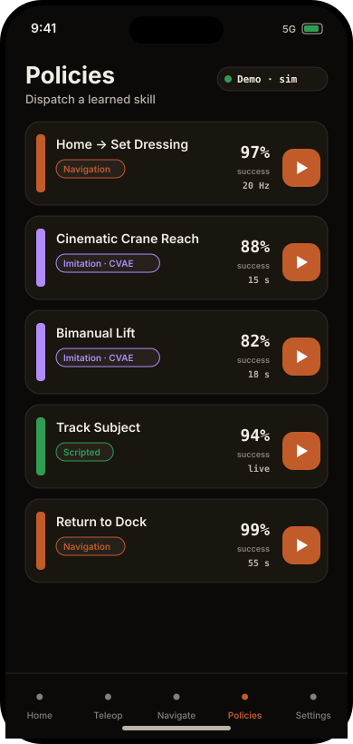
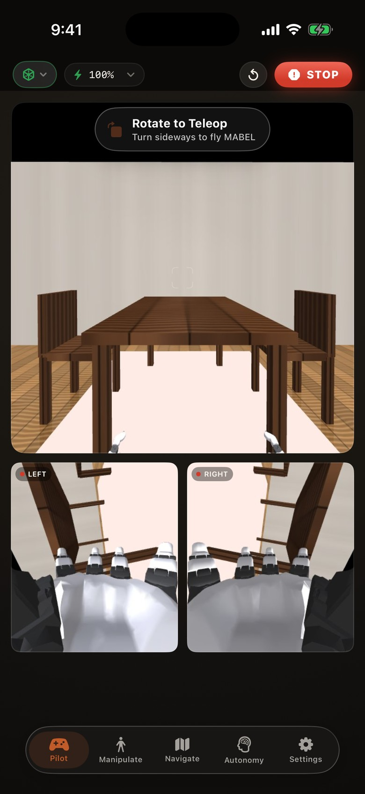
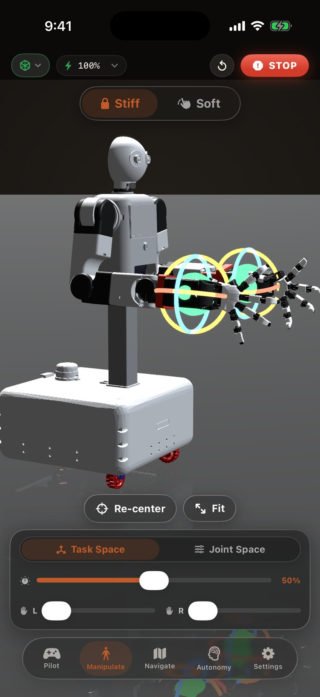
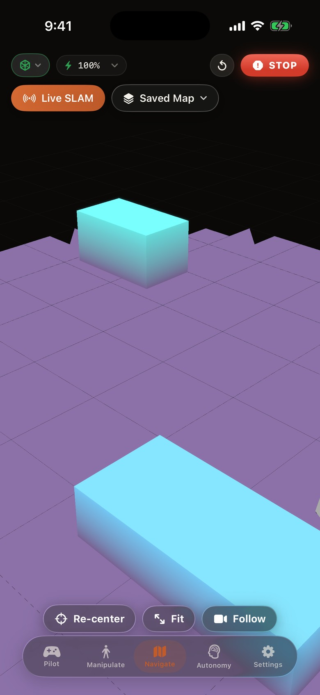
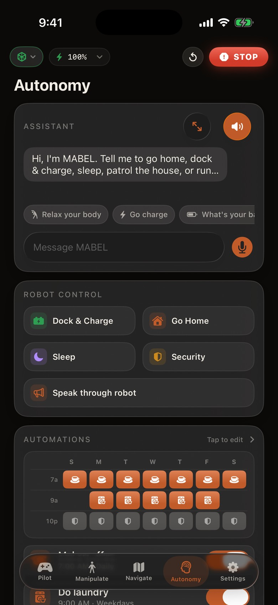
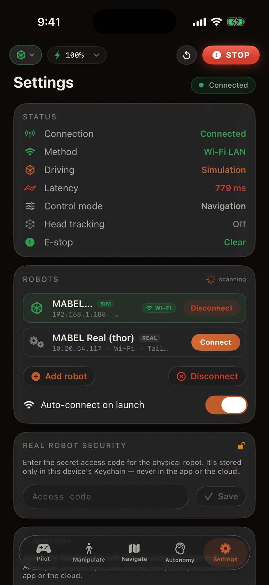
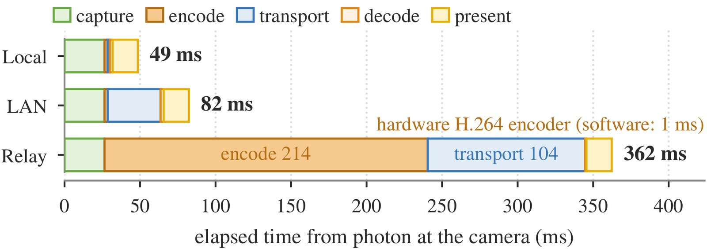
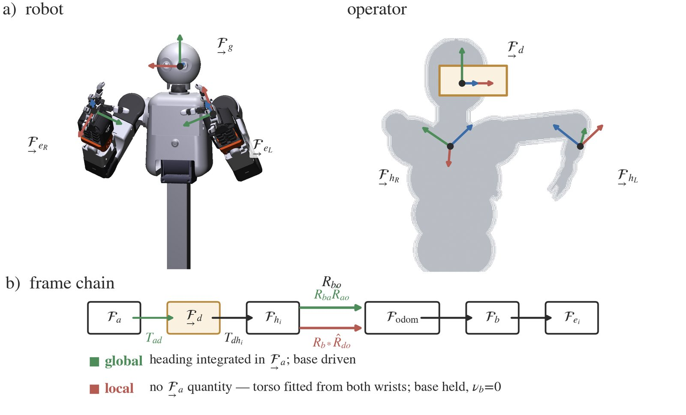

Drive MABEL three ways — a browser console you can try right now, an iPhone in your pocket, and an Apple Vision Pro you reach through. All three speak one wire protocol to the same bridge, and point at the MuJoCo twin or the real robot with no change. Every session is also a training demo.
Three views — Teleop, Body, Navigate — over one robot. Press Connect to reach a live bridge; with none reachable, an in-browser kinematic twin keeps every control live. Same teleop_frame protocol as the iPhone and Vision Pro apps.
Joysticks, body control, and navigation over a live MuJoCo simulation — the same wire protocol as the iPhone and Vision Pro apps. The hosted sim may be offline; either way the controls stay live on the in-browser model.
One bridge, three clients: this console, the iPhone app, and the Vision Pro app all speak the same teleop_frame / joint_command / control_mode / external_force protocol to server/sim_teleop_bridge.py, and mirror the same robot_state. Start it with server/start_teleop.sh — the page links up by itself, cycling three paths every 5 s, exactly like the apps: Wi-Fi (auto-discovered — leave the field blank and it races the bridge on this machine, the host it was served from, and your last-used LAN IP, the browser analog of the Vision Pro app's Bonjour scan) → VPN (its Tailscale IP / ts.net name) → Relay (the secure internet relay — a token-gated wss://<host>/teleop?key=… on a public VPS the robot dials out to, so you can drive from anywhere with no VPN app and nothing exposed inbound). Cameras follow the winning path — MJPEG on port 8080 over Wi-Fi, or the same token-gated HTTPS edge over the relay.
A full operator studio hosted by the robot itself: an rviz-class 3D viewer (live rig inside its own SLAM reconstruction, 2D map, LiDAR, camera frusta), drive + manipulate teleop with a draggable IK target ball, per-finger dexterous-hand control, a 59-DOF telemetry band with temperature grading, a pose-setpoint timeline — and a live monitor of every client connected to the server you are driving through.
Safety isn't a settings page you're trusted to read — it's the spine of the interface. Three promises hold on every screen, on both devices, whether you're an operator or a first-time guest.
A red STOP rides every screen and never scrolls away — one tap freezes all motion. Sleep the phone, lift the headset, or lose the link and the robot freezes itself: a heartbeat means it only moves while a human is actively holding on.
A speed dial scales everything from a crawl to full tilt. Hard speed caps live on the robot itself, every joint stops short of its mechanical limit, and letting go holds the pose under gravity comp — nothing springs back at you.
One driver holds the controls at a time; the robot must be explicitly armed to move; a stored access code gates every connection; and a live health panel flags a hot motor or a joint near its limit before it bites.
The operator never commands joints directly. Their pose is retargeted into robot-frame targets, and a single whole-body solve resolves those targets into all 51 joint commands.
Vision Pro reports ~25 joint poses per hand. The ORCA hand has 16 tendon-driven finger DOF plus a wrist roll, with its own link lengths — so copying angles doesn't work. We match geometry in task space instead.
Human and ORCA kinematics differ — the same joint angles put the fingertips in different places. Equal angles would not equal the same grasp, so joint-space copying is out.
We pick vectors between hand landmarks — fingertip-to-palm, thumb-to-index — and minimise the squared difference between the human's vectors and the robot's, solving over the robot's joint angles. It's the dex-retargeting formulation.
Joint limits enter as hard bounds; a temporal term λ‖q−q₋₁‖² penalises jumpiness. Warm-started from the previous frame, the solve finishes in well under one 60 Hz tick.
The headset gives a head pose and two 6-DoF wrist poses. MABEL has far more freedom than that — two 7-DOF arms, a tilting torso, a lift, and a holonomic base — so the mapping is a Cartesian QP that resolves the redundancy.
The head pose drives the pan/tilt/roll neck; each wrist's 6-DoF pose becomes an arm end-effector target in the robot frame. Nothing is committed to a joint yet.
The arms, torso, lift, and base are over-actuated for a 6-DoF target. The QP picks the solution that stays off the joint limits, keeps the torso comfortable, and lets the base lazily follow to extend reach.
A single QP couples both arms, the torso, the lift, and the base — so the body moves as one coordinated system rather than four independent chains.
Retargeting only produces targets. Turning targets into safe, coordinated joint commands — under the tip-safe and balance constraints — is whole-body control, the same solver a learned policy or a navigation goal flows through. That's why retargeting lives in Teleop and WBC lives in the control stack.
Put the headset on and you see MABEL's stereo feed wrapped around you. Reach into the scene — your hands drive the arms, a pinch closes the grasp, your gaze aims the neck.
The head ZED's left/right streams map onto an inward-facing sphere in RealityKit — you look around the robot's world in true stereo, with wrist-cam thumbnails for close work.
A UMI-style relative mapping: pinch to clutch in, move your hands, release to re-anchor — no jumps, robust to where you started. Thumb-to-index distance becomes the grasp.
Hand targets feed the whole-body IK; a lazy swerve base and a look-at neck come along for free. One headset drives all 51 joints.
The same five tabs, floating as glass — every window below is a real capture from the visionOS Simulator. Put the headset on and MABEL's stereo feed wraps around you; step into the immersive room and your hands are the arms — a pinch closes the grasp, your gaze aims the neck. 27 joints per hand at 60 Hz.




The head ZED's left/right streams map onto an inward-facing RealityKit sphere — you look around the robot's world in true stereo, with wrist-cam thumbnails for close work.
A UMI-style relative mapping: pinch to clutch in, move, release to re-anchor — no jumps. Thumb-to-index distance becomes the grasp. See retargeting.
Hand targets feed the control cascade; a lazy swerve base and a look-at neck come along for free. One headset drives all 51 joints.
Rotate to landscape for the cockpit: a left stick translates, a right stick turns and lifts, over live head and wrist camera feeds — with a speed governor and an always-present STOP.
The sticks run through the same swerve IK and tip-over envelope as every other path, so it stays drone-simple up top and robot-safe underneath.
The status bar shows the live link, battery, and speed; the app auto-connects and otherwise drives an on-device Demo simulator — live with nothing plugged in.
The Body tab renders a real-time 3D twin — same joint definitions as the web viewer and MuJoCo. Drag a wrist under Gravity Comp, switch to Compliance or Joint Control, set grip, or reset to home — the whole-body controller coordinates the rest.
On a real SLAM reconstruction, tap to drop a goal; the app runs an A* global plan around the obstacles, then a pure-pursuit controller tracks the swerve trajectory and drives it.
Real capture · tap a goal → A* plan → pure-pursuit drive

The library lists learned and scripted skills — CVAE visuomotor policies, navigation routines, and scripted behaviours — each with its kind, control rate, and an offline-eval success rate. Tap ▶ to dispatch. See Learning for how they're trained.
All five tabs, one thumb — every screen below is a real capture from the iOS Simulator. It auto-discovers MABEL on Wi-Fi and falls back to an on-device simulator, so every control stays live even with no robot in the room.





The Pilot cockpit: left stick translates, right stick turns and lifts, over live head and wrist feeds — with a speed governor and an always-present STOP.
Manipulate renders a live twin — drag a wrist, pick Firm or Soft, and how much body moves; the controller coordinates the rest.
On a real SLAM map, tap a goal: an A* plan routes around obstacles, then pure-pursuit drives it. See navigation.
A library of learned and scripted skills, each with its kind and an offline-eval success rate. One tap runs it on the robot or the twin. See autonomy.
Latency and retargeting — measured, not promised.


Which headset? The Apple Vision Pro runs the native visionOS app — ARKit head pose plus a 27-joint skeleton per hand, and it is simultaneously visualizer, controller, and demonstration recorder. Other headsets (a PICO, a Quest) drive MABEL through the zero-install browser client instead — same wire protocol, no app store. All retargeting runs server-side either way.